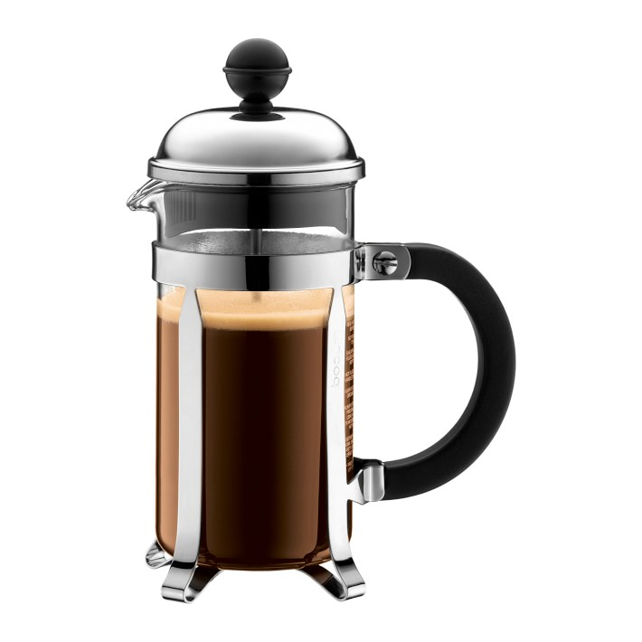
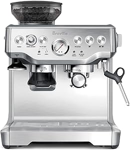
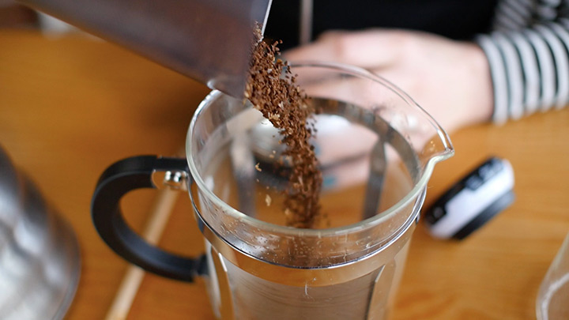
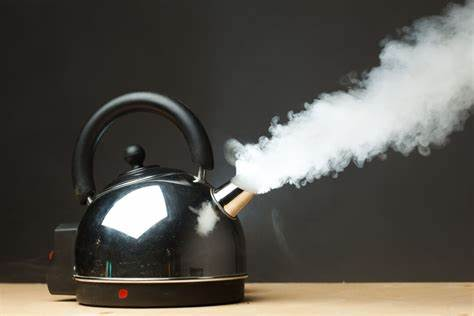
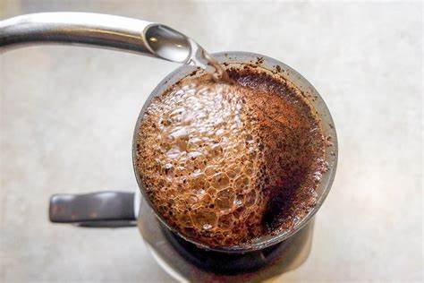

Properly brew coffee
Instructable
Required materials
- Coffee method options
- French press
- Espresso
- Drip
- Coffee bean type
- Light roast
- Dark roast
- Medium roast
Step 1
Choose your local coffee shop and give something a try
- Starbucks
- Dunkin Donuts
- A local shop
Step 2
Choose the brewing method of choice, for simplicity we will choose the french press on the left but here are other options
- Coffee method options
- French press
- Espresso
- Drip


Step 3
Add desired amount of grounds of choice to bottom of press.
- The general formula is 2 tablespoons of coffee per cup of water (1:14) ratio
- Press size is negligible. What's important is the coffee to water ratio
- Some may want a stronger ratio such as 1:10 or a weaker one such as 1:16

Step 4
Heat water to a boil or about 200 Fahrenheit

Step 5
Add Water

Another example using espresso machine